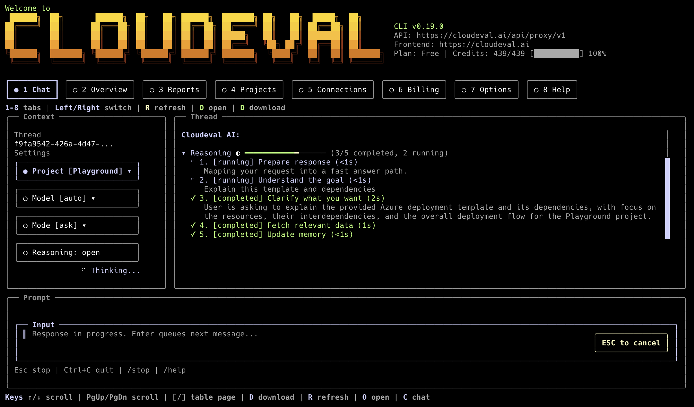
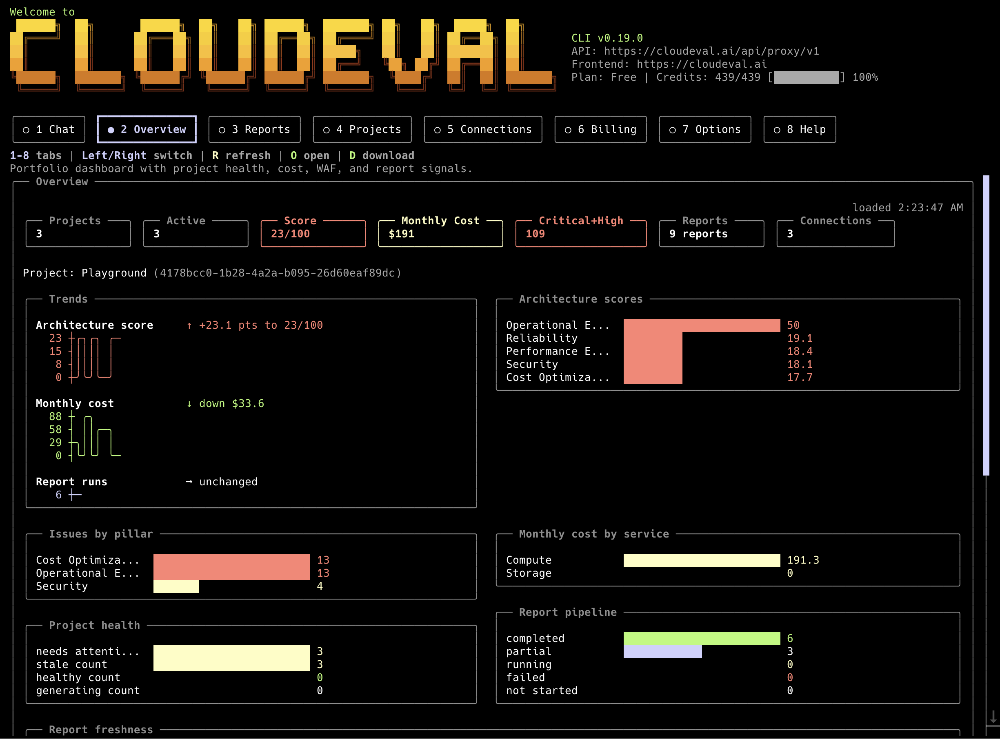
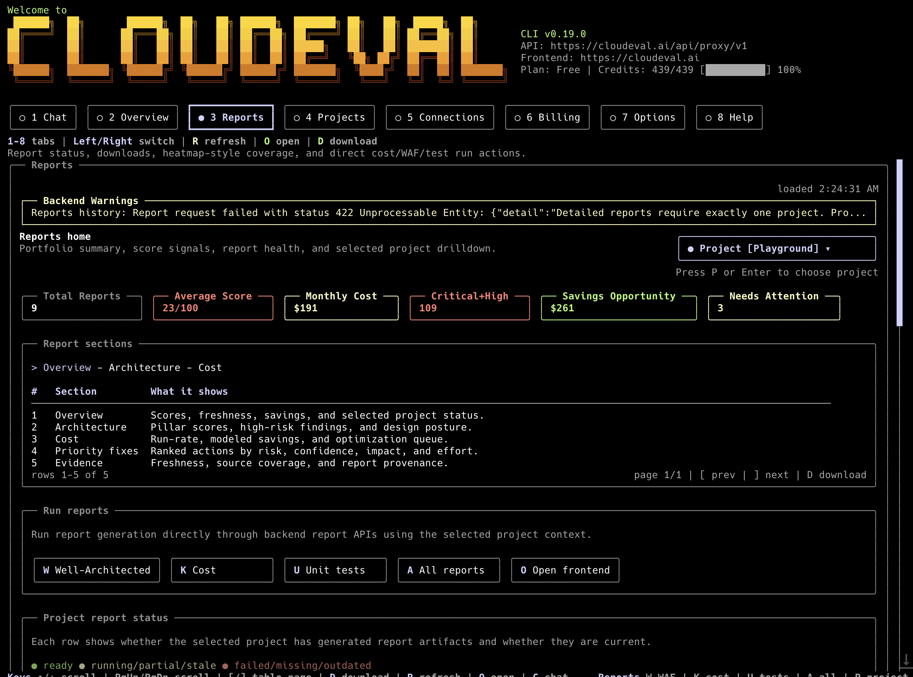
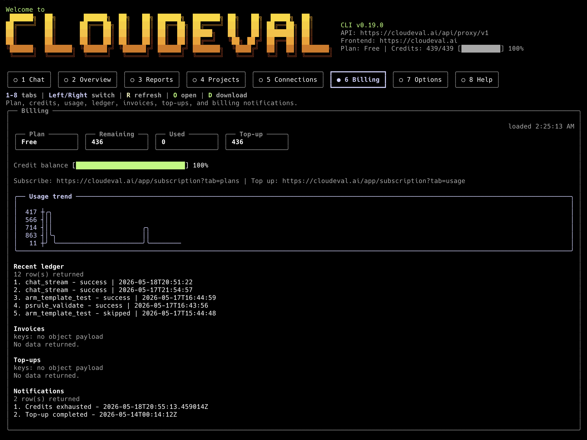

Developer Setup
CloudEval CLI exposes cloud evaluation workflows to terminals, CI, and agent hosts through normal commands, public skills, reusable recipes, and MCP.




Install and Onboard
npm install -g @ganakailabs/cloudeval-cliUse npm on Node.js 20+ machines. Use the standalone installer when you want release binaries, shell aliases, completions, or optional local agent onboarding.
curl -fsSL https://cli.cloudeval.ai/install.sh | bashirm https://cli.cloudeval.ai/install.ps1 | iexUse the bash installer on macOS, Linux, WSL2, and Git Bash. Use the PowerShell installer on Windows and Linux when PowerShell 7+ is available. The bash installer detects common agent clients and IDEs such as Codex, Claude Desktop, Cursor, and VS Code. Optional setup prompts detect existing CloudEval MCP config, skip clients that are already configured, run login when approved, configure MCP for missing clients that can be set up automatically, and summarize manual-only clients with a follow-up command. Interactive cloudeval update uses the same installer and can ask whether to onboard MCP after updating the binary; cloudeval update --yes stays unattended. When new MCP capabilities are installed, restart or reload configured MCP clients when you are ready; CloudEval does not restart those apps automatically. Release downloads prefer compressed assets, show compact labeled progress bars in interactive terminals, and use timeout/stall checks so slow CDN transfers fail clearly. On non-Windows platforms, the installer can create eva and cloud aliases. Nothing is written to agent or IDE config unless you approve it.
The Terminal UI keeps starter prompts hidden until you run /starter. Use the Thread control or /thread to switch open chat sessions, recent CloudEval chat threads, and local CLI sessions; /thread new starts another independent open session. Roomy terminals show a context rail with project, thread, model, mode, profile, report artifact chips; narrower terminals keep the chat first and expose the same controls through the docked composer and slash commands. Typing / opens a bottom command completion strip; use Tab or Up/Down to move, Right to accept the ghost text, and Enter to choose the highlighted command. Streaming work appears as a task ledger in the thread. Grounded answers show highlighted numbered citations and a Sources section instead of raw [S_tool_...] tags; /copy copies the latest assistant response and /download writes a Markdown transcript with the same references. Project and Connection tabs include selected-item detail panes for backend fields, report coverage, sync state, and linked records; use J/K or Up/Down on Projects and Connections to move the selected row, then Enter to confirm it. The billing header separates credits left from observed credits used, and banner details include the logged-in user. Use the Profile control or /profile cost to choose an Agent Profile; choosing a profile switches to Agent mode, while choosing Ask mode clears the profile back to the default chat flow. Press Esc from the prompt to leave text editing and use tab, arrow, or number shortcuts for controls and tabs; type again to resume editing. Busy loaders and the input cursor can be disabled with --no-anim. Focused controls and the active top tab use the shared warm banner-yellow accent, with the active tab filled across its full button interior and highlighted label text.
curl -fsSL https://cli.cloudeval.ai/install.sh | CLOUDEVAL_INSTALL_AGENT_SETUP=0 bash
curl -fsSL https://cli.cloudeval.ai/install.sh | CLOUDEVAL_INSTALL_MCP_CLIENTS=codex,cursor bashUse cloudeval uninstall to remove installer-owned local artifacts. Config, sessions, and auth under ~/.config/cloudeval are kept unless --remove-config is provided.
cloudeval uninstall --dry-run
cloudeval uninstall --yes
cloudeval uninstall --yes --remove-configSkills
Public skill files live in the repository under skills/. They are open-source agent guidance only and do not contain proprietary backend internals, secrets, tenant IDs, account IDs, customer payloads, or private business logic.
cloudeval: router, safety rules, MCP-first guidance, stdout/stderr contract.cloudeval-agent-ops: ask, agent, Agent Profiles, chat/TUI, models, sessions.cloudeval-projects: projects, template creation paths, deeplinks, inventory, and healthchecks.cloudeval-visualizations: architecture and dependency diagram exports with file-write guardrails.cloudeval-reports,cloudeval-cost, andcloudeval-waf: report discovery, triage, and evidence-backed summaries.cloudeval-billing,cloudeval-connections,cloudeval-credentials, andcloudeval-mcp-diagnostics: operational workflows with redaction guardrails.
Agent Profiles
Agent Profiles are backend-owned reviewer roles that work consistently in Chat, the CLI, and MCP. Public profile IDs are architecture, cost, triage, and remediation. They are separate from local CLI config profiles.
In the Terminal UI, the Profile control and /profile slash command use the same canonical IDs and send agent_profile_id with chat streams.
cloudeval agents list --format json
cloudeval agents show cost --format json
cloudeval agents run cost --project <project-id> --format json
cloudeval agents run architecture "Review architecture risks" --project <project-id>When a profile run omits a prompt, the CLI uses a deterministic starter prompt for the selected project source and mode. Local CLI hooks are opt-in and can be bypassed per run with --no-hooks.
Recipes
Recipes are thin wrappers over implemented CloudEval capabilities. They now cover cost, WAF, architecture, reports, project inventory and health, connections, credentials, billing, models, sessions, onboarding, frontend links, MCP setup, and architecture/dependency visualizations. Ask/agent-backed recipes can consume credits. Guide recipes print commands for explicit side effects such as project creation, report or diagram writes, browser opens, checkout flows, credential mutation, or MCP config changes.
cloudeval recipes list
cloudeval recipes show cloudeval-cloud-cost-review
cloudeval recipes run cloudeval-cloud-cost-review --project <project-id> --format json --non-interactive
cloudeval recipes run cloudeval-architecture-diagram-export --project <project-id> --output-path ./architecture.pngMCP
MCP is the preferred path for Codex, Claude, Cursor, VS Code, and other agent clients. Start with readonly for inspection-only workflows and move to all only when users need explicit mutations.
cloudeval mcp setup codex --dry-run --toolset readonly
cloudeval mcp setup claude --dry-run --toolset readonly
cloudeval mcp setup cursor --dry-run --toolset readonly
cloudeval mcp setup vscode --dry-run --toolset readonly
cloudeval mcp serve --toolset readonlySetup commands print a short human summary by default. Use --format json when an agent or script needs the full machine-readable config envelope.
MCP exposes Agent Profile tools such as agent_profiles_list, agent_profiles_get, and agent_profiles_run; recipe discovery through cloudeval://recipes; prompts matching recipe IDs; and tools such as recipes_list, recipes_get, recipes_run, projects_list, reports_list, reports_cost, reports_waf, billing_usage, billing_invoices, credentials_templates, sessions_search, models_list, auth_status, status, and doctor. Authenticate before the server starts; tool calls do not accept access keys as arguments.
Authentication and Automation
Use device login for local development and scoped access keys for CI or long-running agent hosts. Device login opens cloudeval.ai/device/login with an account chooser hint so the browser auth provider asks which work email to use. Prefer --access-key-stdin or CLOUDEVAL_ACCESS_KEY; --access-key warns because process arguments can leak. The CLI redacts sensitive identifiers and secret-shaped values by default.
cloudeval login
cloudeval auth status
cloudeval credentials templates
cloudeval credentials create --template ci --name agent-automation --project <project-id> --expires 90d